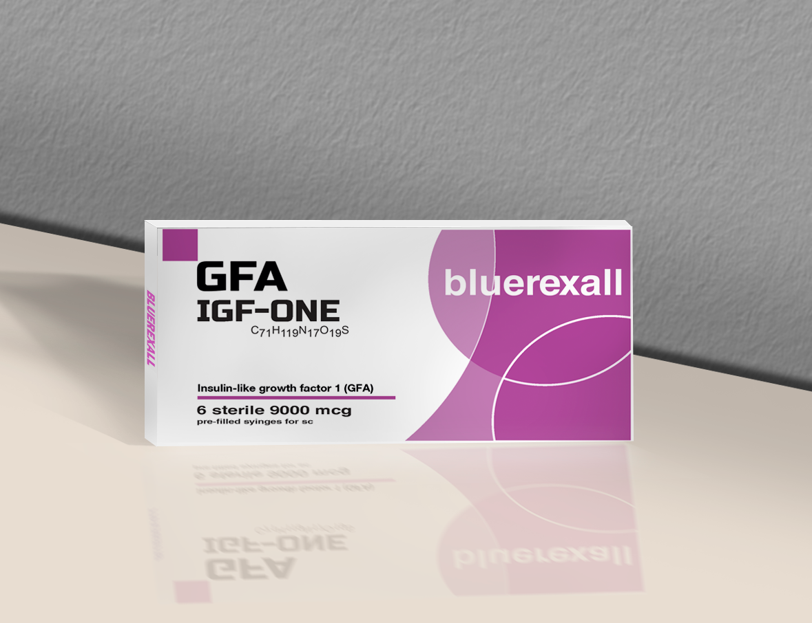
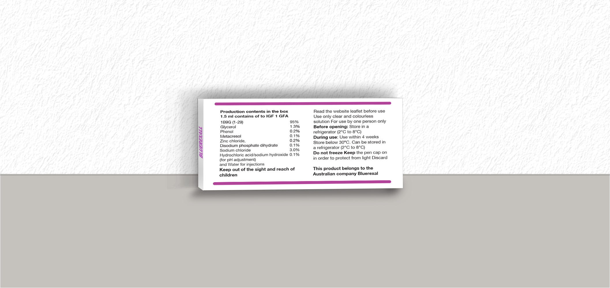
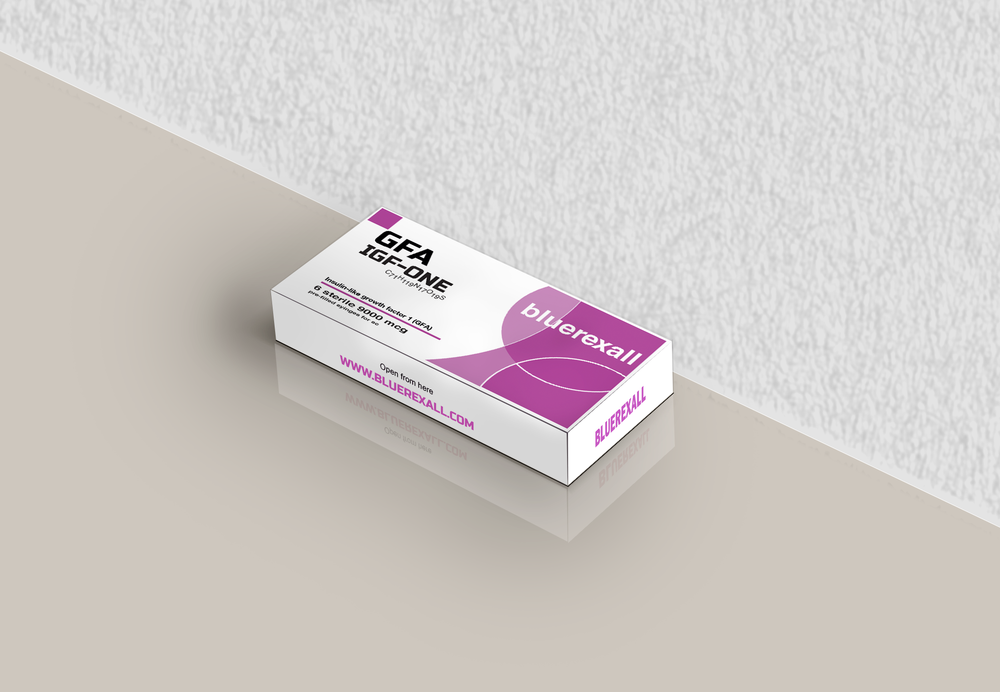
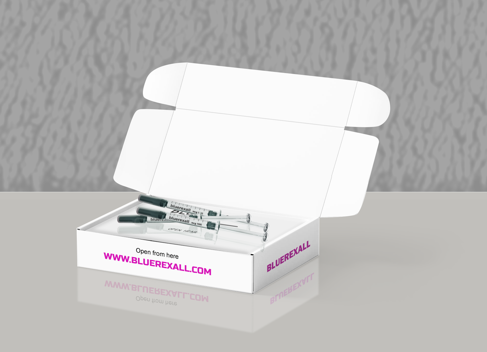

Product Gallery




IGF-BP5 | Explore How Cells Respond to Growth Signals
Bluerexall presents IGF-BP5 for research into the insulin-like growth factor system. A growth factor can be present around a cell, yet its effect depends in part on how much of it can reach a receptor. Insulin-like growth factor-binding protein 5, known in scientific literature as IGFBP-5, binds both IGF-1 and IGF-2. Those interactions make it a useful subject for studying how the local environment changes the way cells respond to growth signals.
How IGF-BP5 shapes growth factor activity
The extracellular matrix is the network of proteins and other materials that surrounds cells. In a study of cultured human fibroblasts, researchers found that IGFBP-5 associated with this matrix. In that setting, it bound IGF-1 less tightly than it did in solution and enhanced the cells' growth response to IGF-1. When IGFBP-5 was present only in the culture medium, much of it broke down into a fragment, and the same enhancement was absent. The experiment shows how the location and stability of a binding protein can influence the effect of a growth factor under specific laboratory conditions. Read the extracellular matrix study.
The connection to Long R3 IGF-1
Long R3 IGF-1 and IGF-BP5 give researchers two ways to investigate the same signaling system. Long R3 IGF-1 is a modified form of IGF-1 with lower affinity for several IGF-binding proteins than native IGF-1. Comparing how cells respond to the two forms helps researchers explore how strongly binding proteins influence growth factor activity. IGF-BP5 brings the binding protein itself into focus. It lets researchers ask how the growth factor's surroundings influence the amount available to cells. The connection between LR3 and BP5 is the interaction between growth factors and the proteins that bind them. Read the Long R3 IGF-1 study.
Why IGF-BP5 matters in muscle research
Muscle precursor cells go through a process called differentiation, during which they acquire the characteristics of muscle cells. In experiments with mouse muscle cells, reducing IGFBP-5 impaired differentiation and lowered IGF-2 expression. Under the study conditions, adding IGFBP-5 with a low concentration of IGF-2 helped restore differentiation. The researchers linked this response to a feedback mechanism in which IGF-2 signaling stimulates further IGF-2 expression. These findings provide a way to investigate how muscle cells develop and how local binding proteins influence that process. Read the muscle cell study.
What the research says about muscle size
Muscle cell differentiation and muscle hypertrophy describe different processes. Differentiation is how precursor cells acquire muscle cell characteristics. Hypertrophy refers to the enlargement of existing muscle fibers. The mouse cell study examined differentiation in culture. Whether taking or injecting IGF-BP5 increases muscle mass or strength in people remains unestablished. Its relevance to muscle research lies in the questions it helps researchers investigate, including how cells respond to IGF-2 as they develop.
For research use only.